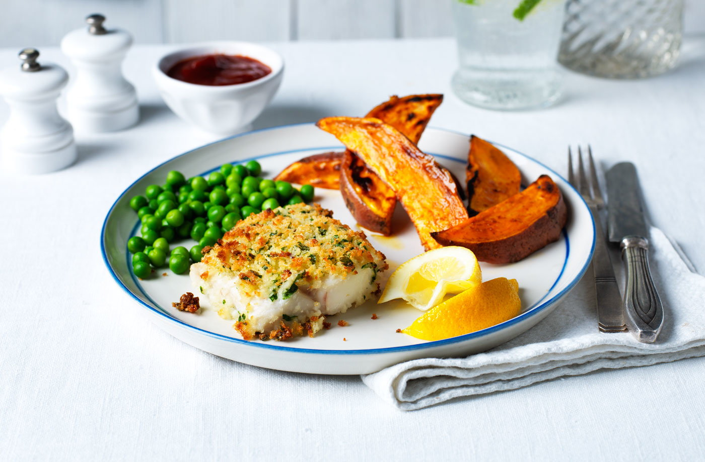

Healthy Fish And Chips Recipe

Ingredients
- 700g frozen sweet potato wedges
- 1 tbsp light olive oil, plus extra for brushing
- 1 tsp sweet paprika (optional)
- 4 frozen hake fish fillets, approx 100g each
- 50g breadcrumbs
- 1 lemon, zested, plus extra wedges to serve
- 25g Parmesan, grated
- 2 tbsp chopped flat leaf parsley
- frozen peas or petits pois, cooked to pack instructions, to serve
Method
- Preheat the oven to gas 7, 220°C, fan 200°C. Lightly brush a shallow roasting tray with oil then add the
frozen sweet potato wedges. Sprinkle with the paprika (if using) and bake for 10 mins in the preheated oven.
- Meanwhile, place the frozen fish fillets well apart on a lightly oiled baking sheet. Put the breadcrumbs in
a bowl, then add the lemon zest, Parmesan, parsley and 1 tbsp of oil. Season with black pepper and mix
together.
- After 10 mins in the oven, turn the potato wedges, brushing with a little more oil if sticking. Return them
to the middle shelf of the oven and put the fish fillets on the top shelf. Bake for another 5 mins.
- Drain off any liquid released from the fish then divide the breadcrumb mixture evenly between the fillets,
pressing down firmly onto the top of each one with the back of a spoon. Return to the oven and leave
everything to cook for another 15-18 mins, or until the crumbs are golden, the fish is opaque and the
potatoes are golden and crisp. Serve with peas and lemon wedges on the side.
Cook’s tip:If you sit the potato wedges upright on the baking tray as they bake, you won’t need
to turn them as they cook.
See More: